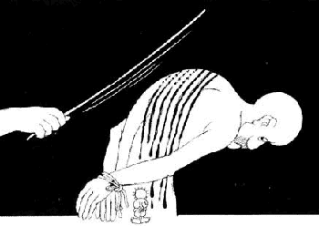

International Law
This introduction into international law, human rights and the peace process might give you a view in which one could distinguish sharp contrasts between rights and power. Recently a meeting was convened between the High Contracting Parties, that is, those countries who are signatories of the IV Geneva Convention, in Geneva. In 1949, after having experienced the nightmare of two devastating wars, the world community advanced a compact designed to protect future generations of civilians from the massive violations of rights that often results from such conflicts. The outcome of this meeting became known as the Geneva Convention Relative to Protection of Civilian Persons in Time of War, short, the Fourth Geneva Convention. Virtually every government in the world holds that this important convention applies to Israel's occupation of the West Bank and Gaza (as well as the Golan Heights and the south of Lebanon). In fact, Israel alone makes the claim that it administers the occupied territories and not occupies. Moreover, it claims that since neither Egypt nor Jordan had recognised sovereignty over these territories, they could not be considered "occupied". However, this argument has been universally rejected. The world has been consistent in supporting the application of the Fourth Geneva Convention to the occupied territories. This has been annually reaffirmed since 1967.
Israel, as a High Contracting Party, has been violating the Fourth Geneva Convention for more than 30 years, when it carries out wilful killings extrajudicially, when it tortures or when it indiscriminately uses force. The High Contracting Parties themselves, however, have violated their obligation enshrined in Article 1 of the Convention, to ensure respect for the Fourth Geneva Convention.
Even after the signing of the Oslo Accords of 1993 and succeeding agreements reached between the PLO and the Israeli government, significant violations continue to occur.
JERUSALEM
Article 47: "Protected persons who are in occupied territory shall not be deprived, in any case or in any manner whatsoever, […] by any annexation by the [Occupying Power] of the whole or part of the occupied territory".
Israel has annexed the Golan Heights and has declared as annexed the eastern part of Jerusalem and a substantial area of the West Bank surrounding Jerusalem. With the closure of "Greater Jerusalem", the more than 150.000 Palestinian residents of the city and the many villages surrounding it have been cut off from the West Bank. Similarly, the Palestinians of the West Bank have been cut off from their religious, cultural, economic, social, medical and educational centres in Jerusalem.
From 1947 through 1996 the UN Security Council has issued 21 resolutions regarding Jerusalem. The General Assembly has also issued similar resolutions (from 1947 through 1992 54 resolutions, excluding those which the US did veto). These resolutions were either issued because of Israeli policies and measures regarding Jerusalem in particular or they referred to Jerusalem in the context of the occupied territories. These resolutions emphasise the illegitimacy of the annexation of Jerusalem, based on the illegitimacy of the acquisition of territory by war. Additionally these resolutions regard the city as an integral part of the occupied territories and emphasise the applicability of international humanitarian law, especially the Fourth Geneva Convention. There has been an unheard of international unanimity on these resolutions, which not only won the overwhelming majority of votes, but also often obtained the backing of Israel's traditional friends including the United States.
However, the resolutions lack effective mechanisms for implementation in spite of the provision of such mechanisms in chapter 7 of the UN charter which authorises the Security Council to take compulsive measures to ensure the implementation of its resolutions. The legal force of the Security Council's resolutions, unlike the General Assembly's resolutions, is not enough to ensure their implementation if the country or countries concerned decide not to comply with them.
In the Oslo Agreements Israel has succeeded in excluding anything that contradicts its point of view towards Jerusalem as its "eternal capital". Furthermore it has established its position that Jerusalem should be treated separately from other parts of the 1967 occupied territories. Essentially, the postponement of the negotiations on Jerusalem practically assures its separation from the occupied territories. This conforms with the Israeli annexation and closure of the city to Palestinians.
For its part Israel has intensified its policies and activities in Jerusalem in an effort to change the character of the city and to jeopardise and pre-empt the final solution negotiations. The Interim Agreements clearly prevent any party from "initiating or taking any step that will change the status of the West Bank or Gaza Strip pending the outcome of the permanent status negotiations".
Again, international law is extremely clear in this issue. It cannot be this way, that the international community formulates international legislation and just leaves it at that. It cannot be this way, that countries can violate international law and are accused in some instances and punished in others, due to national interests of powerful Western countries. Regardless of alignments, history, or any other accuse, countries should abide by these international humanitarian principles, including Israel.
Human rights violated related to the status of Jerusalem consist of house demolitions, revocation of residency rights, freedom of movement and other violations. Beginning in 1995, Israel initiated a policy of mass revocation of the residency and social rights of East Jerusalem Palestinians. This policy, implemented by the Israeli Interior Ministry, has led to the forceful eviction of 2,083 Palestinian Jerusalemites between 1996 and 1998 according to official Israeli data. This policy is discriminatory, unjust, and contrary to international law including the Fourth Geneva Convention (art. 49) and the International Covenant for Civil and Political Rights (art. 12).
Regarding planning and building in East Jerusalem, the Interim Agreement stipulated that the issue of Jerusalem would be discussed in the context of the permanent-status arrangements. The Oslo Accords led to no change in Israeli policy on East Jerusalem. As a result, its policy of intentional and systematic discrimination in planning, building, and demolition of houses built without a permit continues.
SETTLEMENTS
Article 49: "The Occupying Power shall not deport or transfer parts of its own civilian population into the territory it occupies".
Over 350.000 Israelis currently live in settlements Israel has constructed in the West Bank (including Jerusalem) and Gaza. The Israeli settlements in the occupied territories violate two principles of international humanitarian law: the prohibition on transfer of civilians from the occupying power to the territory occupied (art. 49 Fourth Geneva Convention), and the prohibition on creating in the occupied territory permanent change that does not benefit the local population.
A fundamental principle of international humanitarian law relating to territory subject to belligerent occupation is that the occupation of territory in wartime is essentially temporary, de facto, situation. The temporary nature of occupation entails limitations imposed on the occupying power regarding the creation of permanent facts in the occupied territory. International humanitarian law prohibits the confiscation of private property and allows the occupying power to take land for compensation, but only to meet its military needs (The Hague Regulations, 1907).
Requisition of land, contrary to confiscation, is temporary by definition, and the occupying power does not obtain ownership. Underlying all the limitations is the idea that the occupying power is not the sovereign in the territory. Consequently, the occupying power may not so any act that constitutes unilateral annexation of all or part of the occupied territory.
Even after signing of the Israeli-Palestinian interim agreements and during their implementation, Israel, more precisely its army, has had total control over all the Israeli settlements in the West Bank and Gaza Strip. Until a final agreement is signed, the international law applicable to the status of Israeli settlements is international humanitarian law.
The Israeli-Palestinian agreements, first signed in September 1993, in effect perpetuated the special status of the settlements, at least until the parties reach a final agreement. During implementation, Israel redeployed its army from a number of military bases in Palestinian populated areas, however, it did not evacuate even one settlement. Israel insisted that all the settlements remain where they are, even where it is especially tensed, as in Hebron.
In implementing the interim agreement in the West Bank, Israel has invested substantial efforts and means to protect the settlements and their residents. Israel has also expropriated or requisitioned additional Palestinian lands, both private and public, to expand settlements and to build roads bypassing Palestinian towns and villages.
The establishment of the settlements was and is a political not a military or security-related act. Its goal is to create permanent facts that will perpetuate Israeli control in the occupied territories. The establishment, the expansion and sustaining of settlements in the occupied territories are unilateral acts that violate rights of Palestinian residents and breach international conventions to which Israel is party.
Derived from this are numerous human rights violations. The Oslo Accords did not relate to Israeli settlements during the interim period, and enabled continuation of Israeli policies of land expropriation, house demolition to build bypass roads, application of two different systems of law, and discrimination between settlers and Palestinians living in the occupied territories. Since 1993, Israel has established thirty new settlements in the occupied territories. Seventeen of these were established just prior to and after the signing of the Wye Memorandum.
Article 53 of the Fourth Geneva Convention prohibits the destruction of property of protected civilian populations. However, almost weekly Israeli authorities demolish the homes or uproot the orchards and farms of Palestinians in the occupied territories. Although the Oslo Accords left Israel with power over planning and building over only some five percent of the West Bank's population, there has been no reduction in the number of homes Israel demolishes each year because they were built without a permit.
REFUGEES
One of the guiding principles of international law and UN resolutions is the right of refugees to return to their homes. Repatriation is the favoured solution for refugees exiled in the course of conflict. The Geneva Convention prohibits "individual or mass forcible transfers […] regardless of motive". The Universal Declaration of Human Rights, and other international legal instruments concerning human rights affirm the right of every individual to leave and return to his country. Conventions relating to the rights of indigenous peoples confirm the right to return to land from which they have been displaced by force.
In the case of Palestinian refugees, their right to return and compensation is supported explicitly by UN resolution 194 (December 1948) which was adopted one day after the Universal Declaration of Human Rights. This resolution has since been reaffirmed one hundred and ten times by the United Nations. The right of Palestinian refugees to regain ownership of their property is established by numerous international legal instruments concerning tthe rights of civilians in times of war, human rights and indigenous rights. Ordinary property law supports the Palestinian right to their properties. As recently as November 1998, the UN General Assembly reaffirmed in resolution 52/644 the principle, based on the Universal Declaration of Human Rights and international law, that Palestinians are entitled to all revenu from their property.
Since the Madrid Conference, Israel has reluctantly agreed to discuss the refugee question, provided the "right of return" is not raised. Before discussing the question of the 1948 refugees, there is the question of the 1967 refugees and their descendants. Consideration of their case and the modalities of their return is allowed for in article 12 of the Declaration of Principles. No progress, however, has been made on this question.
Israel will probably try to prevent a return of large numbers to the West Bank. It will not want a numerically superior Palestinian community alongside Israel. Yet to prevent such a return not only violates UNGAR 194 and every legal instrument concerning refugee rights, but invites irredentism. Israel must weigh up how badly it wants a complete and final settlement that will stick. This where the international community is under a serious misapprehension in referring to the "right of return" as a political issue. UNGAR 194 says nothing of a political settlement. On the contrary, only one condition is placed on the refugees, a condition which is manifestly non-political: "those refugees wishing to return to their homes to live at peace with their neighbours should be permitted to do so at the earliest practicable date". This is the position, hardly a political one, to which the international community, with the exception of Israel, is formally committed.
The Oslo Accords and the formation of the Palestinian Authority have created widespread confusion, both locally among Palestinians and internationally, about the meaning of the right of return in this new context. It therefore is important to clarify that:
- Political negotiations and agreements between Israel and the PLO, do not invalidate international law and UN resolutions. The Oslo negotiations represent an effort to obtain a de facto solution of the refugee question outside the framework of international law and UN resolutions. An explicit renunciation of the right of return by the PLO in a future political agreement with Israel cannot delegitimise the refugee claim, because - according to standards of international law - existing international law and UN resolutions can be replaced only by a political agreement whose provisions grant rights equal to or beyond those defined by international law. Furthermore, given the strong Palestinian public demand of the right of return, its explicit renouncement by the PLO would delegitimize the Palestinian leadership;
- UN resolution 194 is not invalidated by a PA declaration of a Palestinian state on whatever territory. UN resolution 194 provides for the refugees' right to return to their homes. These homes are located in the territory of the state of Israel.
- Although UN resolution 194 can be technically abolished by its repeal by the UN General Assembly, the right of return, solidly anchored in a wide range of international laws, will remain a right and legitimate claim, until surrendered by Palestinian refugees themselves.
 HUMAN RIGHTS VIOLATIONS
Since the signing of the Oslo Accords, human rights violations decreased in certain areas and increased in others. Since we deal here with human rights violations against residents of the occupied territories, this covers violations committed by both Israel and the Palestinian Authority. The Palestinian Authority, which systematically violates the human rights of Palestinians, is itself a product of the Oslo Accords.
Articles 31 and 32 state that "No physical or moral coercion shall be exercised against protected persons, in particular to obtain information from them or from third parties. […] Each of them is prohibited from taking any measure of such a character as to cause the physical suffering […] This prohibition applies to only to killings, torture, corporal punishments […] but also to any other measure of brutality whether applied by civilian or military agents".
The Israeli Supreme Court has legitimised the use of torture as a tool of interrogation. Respected international organisations have noted and condemned Israel's use of torture.
Article 71 of the Fourth Geneva Convention states that "accused persons who are prosecuted by the Occupying Power shall be promptly informed, in writing, in a language which they understand, of the particulars of the charges preferred against them, and shall be brought to trial as rapidly as possible".
Since the beginning of the occupation, Israel has held thousands of Palestinians in "administrative detention" - for prolonged periods without charges, trial or benefit of legal counsel. Both Israel and since its establishment, the Palestinian Authority deny the right to due process and a public trial, sustain administrative detention, and torture detainees during interrogation. These violations infringe directly on individuals. One reason - which does not diminish the Palestinian Authority's responsibility nor its liability - is Israel effectively demands that the Palestinian Authority create a something akin to a police state to protect Israeli security. The Palestinian Authority appears to be all too ready to be compliant to Israel, in breach of human rights standards and its own covenant to its people. This willingness is caused by the Palestinian Authority's desire to silence its opposition. The measures that have been undertaken are not just the commission of acts but the creation of a structural framework that permits these to occur.
The development of an enforcement mechanism to protect human rights (which should have been one of the outcomes of this special session) would have strengthened the resolve of peacemakers and create a firm and just foundation for the resolution of the long-standing conflict. Final status negotiations between Israelis and the Palestinians must be based on recognition of and implementation of international human rights law. At last weeks meeting the international community failed to demonstrate a serious commitment to ensure protection for people in the territories occupied by Israel in particular, and to ensure compliance with international humanitarian law in general. The High Contracting Parties to the Fourth Geneva Convention themselves, however, have violated their obligation enshrined in Article 1 of the Convention, to ensure respect for the Fourth Geneva Convention.
The international community should remind Israel that the requirements of the Fourth Geneva Convention must be met, particularly:
- That all Israeli settlements in the occupied territories are illegal, and must be dismantled in due course unless those who inhabit them are able to negotiate an agreement to enter the jurisdiction of an administration representing the inhabitants of the occupied territories;
- That all forms of collective punishment must cease;
- That the basic rights of the people under occupation must be respected, as framed by the Fourth Geneva Convention;
- That Israel must abandon its use of the defunct and draconian British Defense (Emergency) Regulations of 1945, its practice of detaining people without trial, demolishing homes on suspicion and other practices that violate international law and norms of behaviour;
- That regardless of agreements reached between Israel in 1967 will retain 'occupied' status until Israel has completed a physical and legal withdrawal;
- That Clause 14 of the Cairo Agreement, which calls upon both parties to abide by internationally accepted human rights standards, binds Israel and the PLO to comply with human rights norms (i.e. international human rights law). The international community must ensure that both parties honour this undertaking.
If the lessons of Kosovo, Bosnia, Rwanda and even Iraq are to be learned, the convenors of the special session should have felt compelled to go forward with their effort to contribute to peace by securing the protection of human rights as an essential prerequisite for a just and lasting peace.